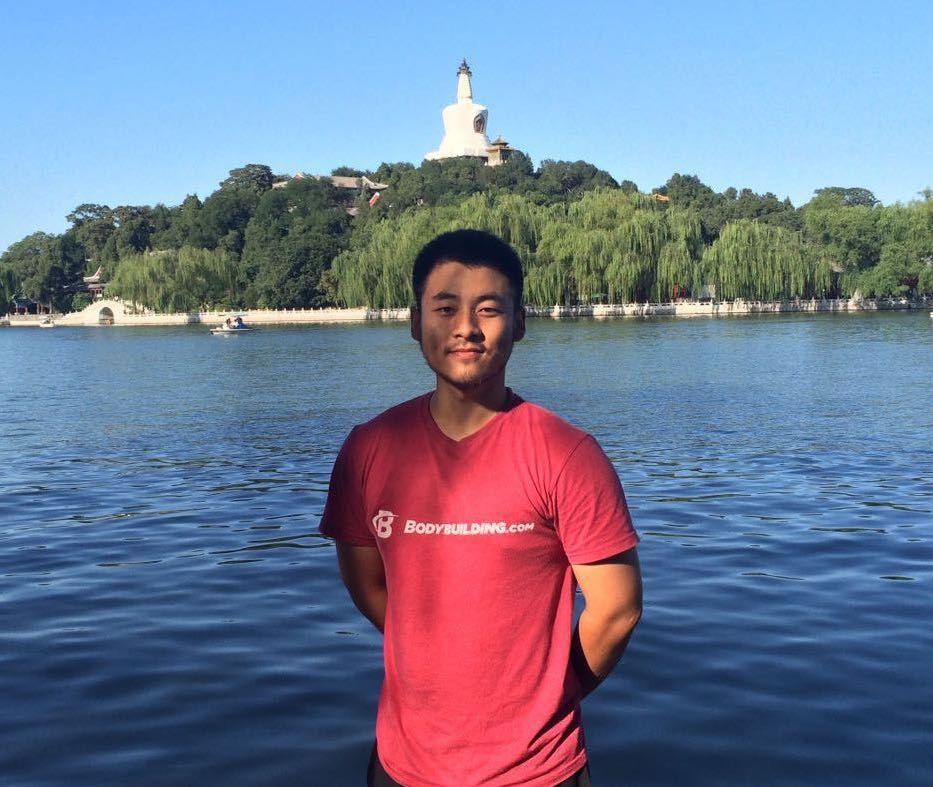

|  | Postdoctoral Researcher 239 Packard Bldg, Stanford, CA 94304. Hosted by Andrea Montanari. |
I am broadly interested in statistics, probability, optimization, and applications in machine learning. The questions that drive my research are the fundamental limits of extracting information from noisy data, and the algorithmic feasibility considerations surrounding this task.
Fundamental limits of detection in the spiked Wigner model.
A. El Alaoui, F. Krzakala, M. I. Jordan.
Submitted 2018. [arxiv].
Detection limits in the high-dimensional spiked rectangular model.
A. El Alaoui, M. I. Jordan.
31th Annual Conference on Learning Theory (COLT), PMLR 75:410-438, 2018. [proc., arxiv].
Tight query complexity lower bounds for PCA via finite sample deformed Wigner law.
M. Simchowitz, A. El Alaoui, B. Recht.
50th Annual Symposium on the Theory of Computing (STOC) 2018. [proc., arxiv].
Here’s an earlier version (not intended for publication) with slightly suboptimal results.
Estimation in the spiked Wigner model: A short proof of the replica formula.
A. El Alaoui, F. Krzakala.
IEEE International Symposium on Information Theory (ISIT) 2018. [arxiv].
To appear in the proceedings.
Finite-size corrections and likelihood ratio fluctuations in the spiked Wigner model.
A. El Alaoui, F. Krzakala, M. I. Jordan.
Preprint 2017. [arxiv]. (Working paper; will be substantially altered.)
Decoding from pooled data: Phase transitions of message passing.
A. El Alaoui, A. Ramdas, F. Krzakala, L. Zdeborová, M. I. Jordan.
To appear in IEEE Transactions on Information Theory 2018.
Conf. version in IEEE International Symposium on Information Theory (ISIT) 2017.
[proc., arxiv].
Decoding from pooled data: Sharp information-theoretic bounds.
A. El Alaoui, A. Ramdas, F. Krzakala, L. Zdeborová, M. I. Jordan.
Submitted 2016 [arxiv].
Asymptotic behavior of Lp-based Laplacian regularization in semi-supervised learning.
A. El Alaoui, X. Cheng, A. Ramdas, M. J. Wainwright, M. I. Jordan.
29th Annual Conference on Learning Theory (COLT), PMLR 49:879-906, 2016. [proc., arxiv].
Fast randomized kernel ridge regression with statistical guarantees.
A. El Alaoui, M. W. Mahoney.
Advances in Neural Information Processing Systems (NIPS) 28, 2015. [proc., arxiv].
Detection limits and fluctuation results in some spiked random matrix models and pooling of discrete data. [link]
Ahmed El Alaoui.
Ph.D. Thesis, Department of Electrical Engineering and Computer Sciences, University of California, Berkeley, 2018.
CS174 Combinatorics and Discrete Probability (UC Berkeley, spring 2015).
STAT210B Theoretical Statistics, part B (UC Berkeley, spring 2017).
I recently obtained by PhD in Electrical Engineering and Computer Sciences from the University of California at Berkeley, under the supervision of Michael I. Jordan. I did my master's at Ecole Normale Supérieure and my undergrad at Ecole Polytechnique. I wrote my master's dissertation on probabilistic record linkage while working at Ecole des Ponts with Guillaume Obozinski.
Ph.D. Electrical Engineering and Computer Sciences, UC Berkeley, 2018.
M.Sc. Mathématiques, Vision et Apprentissage, Ecole Normale Supérieure/Ecole des Ponts Paristech, 2013.
Eng.Deg. Applied math, Ecole Polytechnique, 2012.